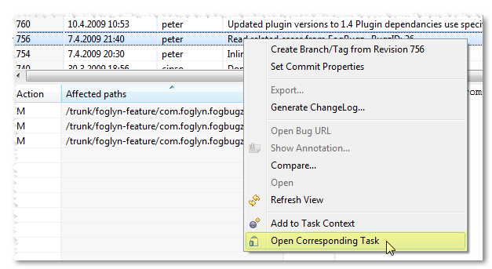

Foglyn User Guide > Case Navigation > Open Corresponding Task


Open Corresponding Task
Open Corresponding Task action is available from context menu in History View and opens FogBugz case corresponding to given change. Case number is determined from the comment, either by using link to
the case, or by using same reference pattern as in Case Hyperlinks feature.

This action is available only if Mylyn Bridge: Team Support feature is installed.